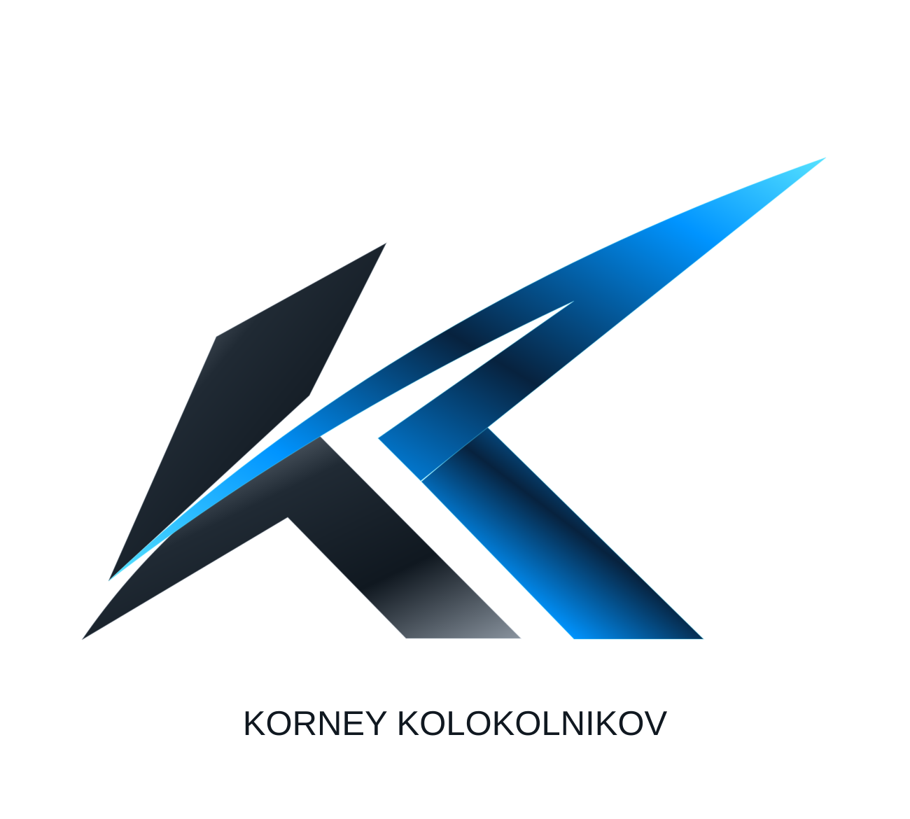
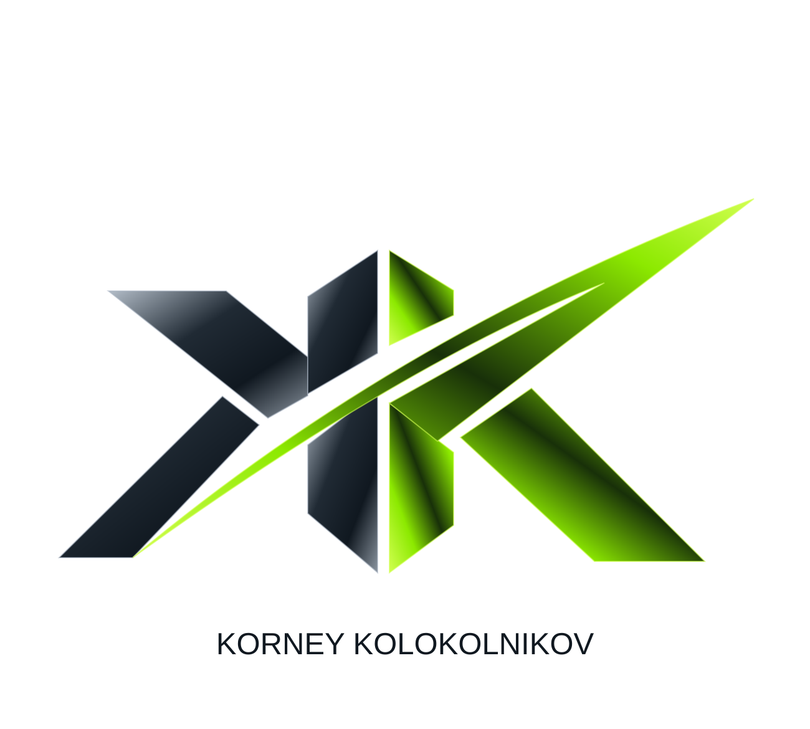
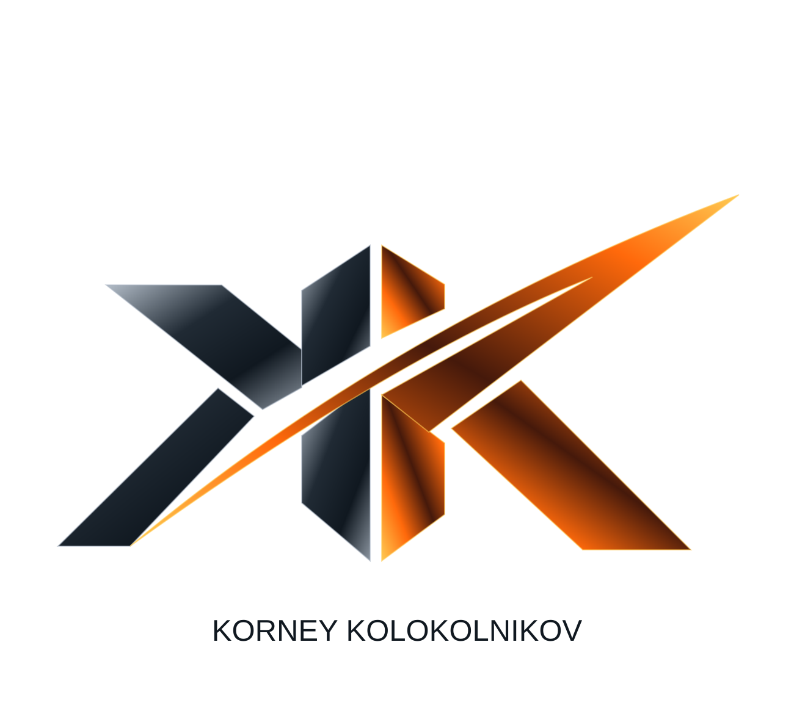

Фирменный стиль
Одна форма.
Три направления.
Монограмма KK с острыми гранями и длинной диагональю вверх. Единая геометрия во всех версиях, а у каждого цвета — своя роль на сайте.


Форма задаёт направление
Раскрытая монограмма и длинная диагональ задают движение. Тёмный металл создаёт глубину, а цветовой акцент подчёркивает направление. Синий сопровождает изучение проектов, лаймовый — просмотр и согласование, оранжевый — начало диалога.
Единый стандарт
Три цвета присутствуют на сайте одновременно и сохраняют своё значение на всех страницах. У логотипов одинаковые контуры и размещение имени. Для небольших размеров используется знак без подписи.
#4AAFFF
#B1ED45
#FF9549